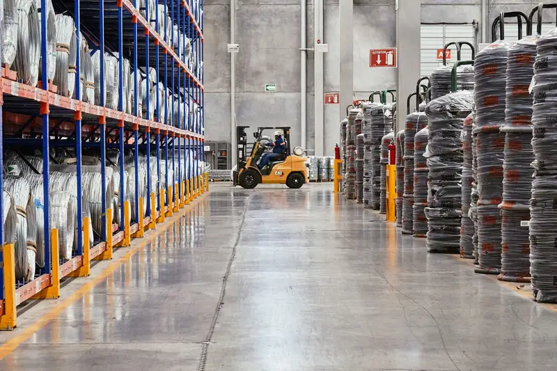

Piso escorregadio onde há água, gordura ou óleo
Piso liso é seguro enquanto está seco. Onde há filme de líquido permanente, a textura é que decide.

Quando o escorregamento vira estatística numa área, a primeira reação costuma ser aumentar a frequência de limpeza e colocar placa de aviso. Em área de processo úmido isso ajuda pouco, porque o filme de líquido não é sujeira acumulada: ele se forma de novo durante o turno inteiro.
O que acontece entre a sola e o piso
O atrito depende do contato real entre a sola e a superfície. Num piso liso e seco, esse contato é amplo. Com um filme de água, gordura ou óleo no meio, parte da sola deixa de tocar o piso e passa a deslizar sobre o líquido.
Gordura e óleo agravam o quadro por serem mais viscosos e mais difíceis de deslocar que a água: o filme resiste à pressão do passo em vez de ser expulso por ele.
O que o agregado muda
A solução corrente em piso industrial é incorporar agregado à superfície, em vez de confiar só no acabamento da resina. O material técnico dos fabricantes é direto nesse ponto: revestimento liso sozinho costuma não alcançar o nível de aderência exigido em área molhada, e o agregado é o recurso usual.
A microtextura criada pelo agregado mantém pontos de contato mesmo com líquido presente, e abre caminho para que o filme escape sob a pressão do passo em vez de ficar preso entre sola e piso.
A troca que ninguém escapa
Quanto mais agressiva a textura, maior a aderência e mais difícil a limpeza, porque a mesma rugosidade que segura o pé também retém resíduo. Não existe ajuste que maximize as duas coisas.
Por isso a especificação não parte de um máximo, e sim do que cai naquele piso e de como a área é higienizada. Granulometria e densidade do agregado, e o quanto o acabamento final o encobre, são decididos em conjunto. Os métodos de ensaio de aderência também variam, e as escalas de um método não se convertem diretamente nas de outro. O parâmetro a atender é o que a especificação da obra nomear.
O que levantar antes de especificar
- O que cai no piso: água, gordura, óleo ou mistura?
- A área é lavada com que frequência, e com que equipamento?
- Os acidentes se concentram em pontos específicos ou são espalhados?
- Há diferença entre as áreas seca e úmida, ou o acabamento é o mesmo em toda a planta?
O mapa dos pontos onde o escorregamento acontece costuma coincidir com o mapa de onde o líquido se acumula, e é esse cruzamento que define onde a textura precisa mudar.
A prova
7 acidentes em 12 meses, nenhum nos 14 meses seguintes
Cozinha industrial em Jundiaí/SP
Refeitório que serve 1.200 refeições por dia registrava 7 acidentes por escorregamento em 12 meses. Executado piso antiderrapante multicamada nas áreas de cocção e lavagem. Nos 14 meses seguintes não houve novo acidente.
Veja também
- Antiderrapante multicamada Para áreas onde o piso fica molhado, engordurado ou oleoso e o risco é escorregamento.
- Por que o piso descola depois da lavagem com água quente O descolamento em área de lavagem quente raramente é falha de aplicação: é diferença de dilatação entre o revestimento e o concreto.
- Resíduo acumulado nas juntas: o ponto que reprova o piso em auditoria Junta e canto vivo são frestas. Numa auditoria de higiene, é por elas que o exame começa.